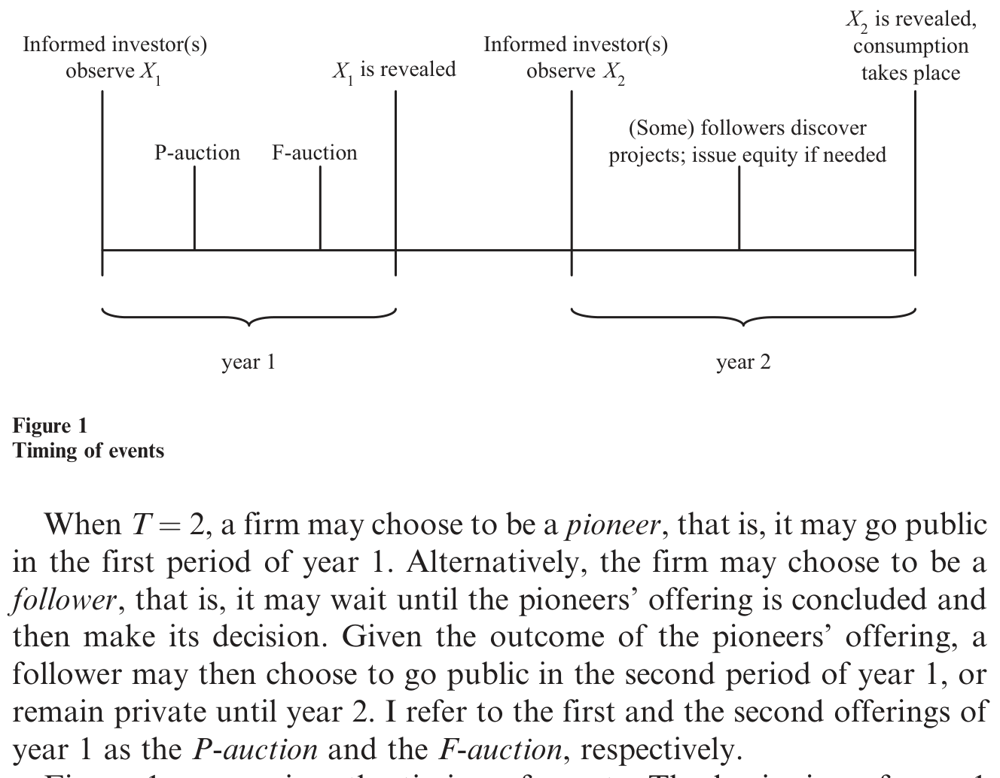
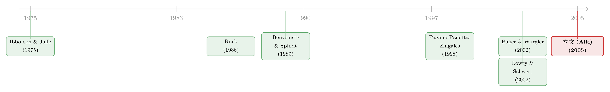

「卖得贵」的新股，为什么能带火一整波——IPO 里一场关于沉默的博弈
本文读的是 Altı (2005, Review of Financial Studies)：作者用一个信息溢出 (information spillover) 模型解释了 IPO 为什么会扎堆。核心是一个被反复验证、却长期缺乏理论的实证规律——当先行者的新股「卖得比预期贵」，后面会涌出一大批跟风的 IPO；而当它「卖得比预期便宜」，市场却只是悄悄冷却。论文把这种「高价点火、低价浇不灭」的不对称，归结到一句几乎是常识的话：没有人会心甘情愿地高价接盘，所以高价必然泄露好消息；而低价既可能是坏消息，也可能是有人揣着好消息故意不出手。
1 一个老问题：新股为什么爱扎堆
IPO 会扎堆，这件事金融学界很早就知道了。从 Ibbotson and Jaffe (1975) 那篇著名的「热门发行市场」(hot issue markets) 开始，一连串研究都发现：新股的发行，无论在时间上还是在行业上，都呈现出明显的聚集——有时几个月里门可罗雀，有时又突然蜂拥而至。问题是，到底是什么在驱动这种忽冷忽热？
最自然的猜测当然是「实体经济」：也许某个行业突然冒出一堆真实的投资机会，大家于是排队上市去融资。可惜，证据并不站在这一边。Pagano, Panetta, and Zingales (1998) 发现，绝大多数 IPO 公司其实并没有迫在眉睫的融资需求；Baker and Wurgler (2002) 则指出，企业的股权发行决策，主要是在「择时」——什么时候市场给的估值高，就什么时候发。更让人困惑的是 Helwege and Liang (2002)：他们把热市和冷市里上市的公司放在一起比，发现两拨公司在成长前景、未来经营业绩上几乎没有差别。
也就是说，热市里多出来的那些公司，并不是因为它们突然「更有前途」了。那它们到底是被什么吸引出来的？
近年的实证研究把矛头指向了「信息溢出」。直觉很简单：先上市的那批公司（pioneers，下称「先锋」）在定价过程中，会把一些原本私有的信息「挤」到台面上来；这让后面那批公司（followers，下称「跟随者」）的估值变得容易，于是吸引更多公司跟着上市。证据相当扎实——Lowry and Schwert (2002) 和 Benveniste, Ljungqvist, Wilhelm, and Yu (2003) 都发现，IPO 的发行量对近期、乃至同期新股的定价结果高度敏感。
但这里藏着一个被人忽略、却异常关键的细节。具体来说：如果某个月里 IPO 的发行价超出了招股书里给的预期区间，接下来几个月的发行量会暴增；可如果发行价低于预期，IPO 市场则只是慢慢「干涸」。 这是一种不对称——高价的「点火」效应，远强于低价的「降温」效应。
为什么会这样？这正是 Altı (2005) 要回答的问题。而要回答它，作者必须先解决一个更基础的理论空白：我们对 IPO 定价的全部理解，几乎都来自把单只新股孤立分析的承销 (book-building) 模型——Benveniste and Spindt (1989)、Benveniste and Wilhelm (1990) 是其中的经典。可一旦这只新股的定价结果会「外溢」出去、会去触发后续一大批 IPO，定价过程本身会变成什么样？这件事，几乎没人研究过。
（关于热市冷市这条线索的另一种讲法，可参见《新股的「冷热」，其实是投行在替你算的一笔账》与《上市不是终点，是一份你随时可以「赎回」的期权》。）
2 把舞台搭起来：模型的设定
要把「信息溢出」这件事讲清楚，作者搭了一个相当精巧、却又尽可能简化的模型。我们一步步来。
公司。 假设全员风险中性、无风险利率为零。市场上有一个连续统的公司，总测度为 1。每家公司活两年——年 1 和年 2。公司 \(j\) 手里有一份「在手资产」(assets in place)，在年 2 末产生一笔净收益 \(X_j\)，它由两年的因子实现共同决定：
$$X_j = X_{1j} + X_{2j}, \qquad X_{ij} \in \{a, 0\}$$
每一年的因子要么是 \(a\)（「好消息」），要么是 \(0\)（「坏消息」），各占一半概率。关键设定有两条：第一年的因子 \(X_1\) 在所有公司之间完全正相关（这就是那个「共同的估值因子」，是信息溢出能发生的根本前提）；而 \(X_2\) 与 \(X_1\) 相互独立。
除了在手资产，公司还有未来的投资机会：公司 \(j\) 会在年 2 以概率 \(\omega_j\) 发现一个项目。项目若被发现，需在年 2 初投入 \(I\)，年 2 末回报 \(F\)，且 \(F > I\)（正净现值，且大到公司总是宁愿付出代价上市也不愿让项目作废）。公司就按这个「项目发现概率」\(\omega\) 来排序，分布函数 \(G(\omega)\) 连续、无原子。
融资。 公司手里没有现金，唯一的融资方式就是上市卖股票。每家公司一开始有一股，归创业者所有；一旦决定上市，创业者把整家公司卖给外部投资者，从所得 \(V\) 里留下 \(I\) 存进公司，自己消费掉 \(V - I\)。
投资者与信息。 这是全篇的灵魂。买方分两类：\(N > 1\) 个不知情投资者（可以想成散户和小机构，只有公开信息），以及若干知情投资者（可以想成大型机构，靠研究和路演解读获得信息优势）。知情投资者在年 \(i\) 初观察到 \(X_i\) 的实现值。要命的是，知情投资者的数量本身是随机的：
$$\Pr(M_i = k) = p\,(1-p)^{k-1}, \qquad k \in \{1, 2, \dots\}$$
这里 \(p < 1\) 刻画了知情者之间的竞争程度——知情者的期望数量是 \(1/p\)，\(p\) 越大，知情者越少、竞争越弱。作者出于技术原因假设 \(p > 1/8\)。
别小看「知情者数量随机」这个设定。正是因为没人知道场上到底有几个知情者（甚至一个知情者都不知道自己是不是唯一的那个），「低价」才会变得含糊不清：你看到一个低价，分不清是大家都拿到了坏消息，还是有一个揣着好消息的知情者故意躲着没出价。这种含糊，是全篇不对称结果的源头。
发行机制。 每次发行是一场次价拍卖 (second-price auction)：出价最高者中标，但只需付次高价。年 1 之内最多有 \(T\) 个时段可以上市；为讲清主要思想，作者先聚焦最简单的 \(T = 2\)。这时一家公司要么选择当先锋（在第一个时段上市），要么当跟随者（等先锋的发行结束、看到结果后再决定）。年 1 的第一场、第二场发行，分别叫 P-auction 和 F-auction。

Figure 1: summarizes the timing of events. The beginning of year 1
图 1 把整个时间线画了出来：年 1 里知情者先观察到 \(X_1\)，先锋办 P-auction，跟随者看结果后决定要不要在 F-auction 里跟进；年 2 则代表「遥远的未来」——只有那些在年 1 没上市、又恰好发现了项目的公司，才会在年 2 上市融资。
3 先把「没有溢出」的世界看清楚：基准情形
要理解溢出有多重要，得先看一个没有溢出的世界——也就是市场上只有一家公司、它的定价结果不会影响任何人。这是论文的第 2 节，也是后面所有反转的参照系。
作者用一个记号把公司的「基本价值」打包了起来。令 \(V_H\)、\(V_L\)、\(V_U\) 分别表示拿到好消息的知情者、拿到坏消息的知情者、不知情投资者各自的出价，并定义：
有了这个记号，命题 1 把单只新股的均衡出价讲得干干净净。当一家项目发现概率为 \(\omega\) 的公司在年 1 上市时：
$$V_H = C(\omega) + a, \qquad V_L = V_U = C(\omega)$$
读法是这样的：当知情者拿到坏消息（\(X_1 = 0\)），成交价就是 \(V_L = C(\omega)\)，即坏消息下公司的完全信息价值；当场上至少有两个知情者、且消息是好的，竞争会把价格抬到 \(V_H = C(\omega) + a\)，即好消息下的真实价值。唯独当场上只有一个知情者、且他手握好消息时，不对称信息才真正给发行人带来了成本——这个孤独的知情者以 \(V_L\) 的低价吃下全部股份，可公司在好消息下值 \(V_L + a\)。于是他白赚了 \(a\) 的信息租金 (information rent)，而这笔租金，正是发行人上市的代价。
这里有一个极其重要的观察：在单只新股的世界里，知情者会采取「揭示策略」——有好消息就出高价。为什么？因为没有后续发行，藏着信息毫无用处。结果是，无论价格是高是低，IPO 的结果都会把信息彻底揭示出来：高价 \(V_H\) 直接喊出了好消息；而即便是低价 \(V_L\)，不知情投资者也能从「自己分到了多少股」反推出真相——如果他一股没拿到，说明有人出了高价、消息是好的；如果他拿到了股份，说明知情者都在低价、消息是坏的。
换句话说，在没有溢出的世界里，高价和低价同样有信息含量。这是基准。命题 2 顺势给出一个干净的结论：没有信息溢出时，公司绝不会在年 1 上市，只有在年 2 真的发现了项目、急需用钱时才上市——因为上市要付信息租金这个代价，而「等一等」有期权价值（万一项目没发现，就省下了这笔代价）。
一句话：没有溢出，就没有「择时」，公司只在真正缺钱时才上市。 记住这个基准——接下来的反转，全是冲着它来的。
4 真正关键的一步：当溢出变成「内生」
现在把那个共同因子 \(X_1\) 放回来——所有公司的年 1 价值，都被同一个 \(X_1\) 牵着走。先锋的 IPO 一旦揭示了 \(X_1\)，跟随者的估值不确定性就被一并消解了。
接着，一个自然的问题是：这会不会触发跟随者扎堆上市？ 答案似乎是肯定的。假设命题 1 的揭示策略仍然成立，那么 P-auction 一结束，投资者之间就信息对称了。此时跟随者在年 1 上市的成本是零（信息对称，没人能赚租金，创业者能拿到公允价）；而继续等到年 2 的成本却是正的（因为年 2 会冒出关于 \(X_2\) 的新的信息不对称）。两相比较，跟随者当然选择紧跟着 P-auction 在年 1 上市。扎堆，就这样出现了。
但真正关键的一步在于——这个溢出效应，是内生的，不是天上掉下来的。
设想你是一个手握好消息的知情者。你当然知道：一旦你在 P-auction 里老老实实出高价，把好消息暴露出去，后面那一大批跟随者就会涌进 F-auction，而那时信息已经对称，你一分钱租金都赚不到。那你为什么不故意藏着呢？你大可以在 P-auction 里出个低价、装作没消息，把这条好消息留到手里，等跟随者上市时再悄悄用它牟利。
于是反转出现了：知情者有强烈的动机去「隐瞒」(conceal) 自己的好消息。 这正是论文最漂亮的地方——它和市场微观结构里 Foster and Viswanathan (1994, 1996) 那条线索遥相呼应：知情的交易者倾向于在早期少暴露信息。只不过在这里，知情者的「机会集」——也就是后续会冒出多少个跟随者的 IPO——是内生演化的。
可是隐瞒也不能做到底。这里有一个微妙的张力：如果知情者无论拿到什么信号都一律出低价，那么发行价就完全不含任何私有信息了；可一旦价格不含信息，跟随者就没有任何理由跟进上市——扎堆消失了，而扎堆本来正是知情者想隐瞒信息去牟利的前提。隐瞒的动机，反过来摧毁了隐瞒所依赖的那个市场。
这个「一边想隐瞒、一边又离不开溢出」的张力，正好把均衡钉死在中间：
在均衡里，一个拿到好消息的知情者，对「在 P-auction 里激进地出高价」和「隐瞒信息出低价」这两件事恰好无差异，于是他以正概率同时做两件事——这是一个混合策略均衡。
而这个混合策略，正是那种不对称的来源。我们来把逻辑闭合：
- 高价：必然揭示好消息。因为没有任何理性投资者会心甘情愿地高价接盘，能把价格顶到 \(V_H\)，背后一定是真的有好消息。
- 低价：含糊不清。它可能是因为大家真的拿到了坏消息，也可能是因为某个揣着好消息的知情者正在隐瞒、故意出低价。
于是论文的核心结论水到渠成：高价比低价更有信息含量，因此高价能把信息不对称压得更低，触发更多后续 IPO。 这恰好就是 Lowry-Schwert 和 Benveniste 等人在数据里看到的那个不对称——高价点火，低价却浇不灭。一个看似平平无奇的拍卖逻辑，竟解释了整个热市的形状。
注意这个机制和 Baker-Wurgler 式「市场择时」的微妙差别：这里没有任何人在「估值过高时趁机发股」的意义上欺骗市场。所有人都是理性的，价格也都是公允的。驱动公司上市的，不是它们眼下的融资需求，而是市场估值所揭示的信息——这恰好与「热冷市公司基本面无差异」的实证证据对得上。
5 把时间拉长：热市为什么会「退烧」
论文的第 4 节把 \(T = 2\) 推广到多期（\(T > 2\)、且每期以概率 \(\gamma\) 延续）。动态分析给出了几个很有味道的推论。
第一，IPO 发行量对市场状况的敏感度，在热市初期最高，随后逐渐衰减。 这给前面那句「不对称在热市早期更明显」提供了精确的动态版本——越往后，能被挤出来的私有信息越少，价格的「点火」能力越弱。
第二，公司质量随时间单调恶化。 先上市的是项目发现概率 \(\omega\) 最高的公司；热市拖得越久，留下来上市的就是成长性越差的公司。热市末期的「晚跟随者」，是一批几乎没什么成长潜力的公司——它们募了钱，却长期把现金趴在账上不动。而且，当公司平均的投资机会越好，这种质量恶化反而越剧烈：此时先锋是顶尖的好公司，晚跟随者是垫底的差公司，两极分化。尤其那些被「高价」结果触发上市的公司，最有可能长期攥着募来的钱不花。
这一条对实证研究者特别有诱惑力——它把「热市末期的 IPO 是不是更差」变成了一个可检验的、有方向的预测。
6 文献脉络
把这篇论文放回它所在的那条河流里，能看得更清楚。
最上游，是 Ibbotson and Jaffe (1975) 记录下的「热门发行市场」现象，以及随后 Ritter (1984)、Ibbotson, Sindelar, and Ritter (1988, 1994) 对 IPO 周期的刻画——它们提出了问题，却没回答「为什么」。
接着，一条平行的支流是 IPO 定价过程的理论：Rock (1986) 的赢者诅咒、Benveniste and Spindt (1989) 与 Benveniste and Wilhelm (1990) 的承销询价模型。它们把「不对称信息如何抬高上市成本」讲透了，但都只盯着单只新股，定价结果不外溢。

然后，实证这边开始逼近真相：Pagano, Panetta, and Zingales (1998) 发现公司上市不是为了融资，Baker and Wurgler (2002) 把「市场择时」摆上台面，Helwege and Liang (2002) 证明热冷市公司基本面无差异，而 Lowry and Schwert (2002)、Benveniste et al. (2003) 直接量出了那个核心规律：发行量高度敏感于近期定价、且高价的作用强于低价。
也有几篇理论尝试解释扎堆，但都把溢出当作外生给定的：Maksimovic and Pichler (2001) 关注上市与产品市场竞争的互动；Benveniste, Busaba, and Wilhelm (2002) 研究跟随者如何「搭便车」于先锋揭示的行业信息、以及投行的协调作用；Hoffmann-Burchardi (2001) 考察创业者与投资者之间的信息不对称；Subrahmanyam and Titman (1999) 则把上市决策与公开市场的信息效率联系起来。
本文所处的位置，正是这条脉络上缺的那一块：它第一次把信息溢出的动态、以及 IPO 择时，内生地从知情者的策略博弈里推导出来——而不是假设先锋的 IPO 自动揭示一切。
7 评论与延伸（Q&A + 研究方向）
(a) 几个可能的疑问
Q：凭什么说「高价比低价更有信息」？这听起来太巧了。
它其实是次价拍卖逻辑的直接推论，并不巧。能把价格顶到 \(V_H = C(\omega) + a\)，唯一的解释是有知情者在好消息下激进出价——理性人不会无故高价接盘，所以高价是好消息的「硬信号」。而低价 \(V_L\) 是个混合体：可能是真坏消息，也可能是知情者揣着好消息在隐瞒。信息含量的不对称，源于「隐瞒」只会压低价格、不会抬高价格。
Q：信息溢出明明对所有人都好，为什么会内生地「打折扣」？
因为溢出对发行人和跟随者好，对知情者却是坏事——一旦信息公开，知情者就赚不到租金了。所以拿到好消息的知情者有动机隐瞒（出低价），把这条信息留到跟随者上市时再用。但如果人人都隐瞒到底，价格就不含信息、扎堆就不会发生，知情者也就无利可图。这个张力把均衡逼成了混合策略。
Q：这和 Benveniste-Spindt 那类承销询价模型到底差在哪？
那类模型分析的是孤立的单只新股：定价结果不外溢，知情者没有「留着信息以后用」的动机，于是采取揭示策略。本文的全部新意在于让定价结果去触发后续一连串 IPO——一旦机会集是内生的、会随价格演化，知情者的最优策略、乃至价格的信息含量，都被彻底改写了。
Q：模型说的「market timing」，和 Baker-Wurgler 的「择时」是一回事吗？
不完全是。Baker-Wurgler 的择时带有「趁估值过高发股」的味道，隐含某种错误定价。本文里没有人欺骗市场，价格全是公允的、所有人都理性。驱动上市的是市场估值所揭示的信息（信息不对称被压低了），而非公司当下的融资需求。这反而更契合「热冷市公司基本面无差异」的证据。
Q：为什么热市后期的公司质量更差、还爱囤现金？
因为公司按项目发现概率 \(\omega\) 排序上市：\(\omega\) 最高的先走，热市拖得越久，剩下的越是低成长公司。它们之所以还上市，是趁着溢出把成本压低了「搭个便车」，可它们大概率发现不了项目，于是募来的钱只能趴在账上。被高价触发上市的公司，囤现金的概率尤其高。
Q：这个模型只能讲 IPO 吗？
不止。作者指出它可以重新解读为并购 (M&A) 模型：发行人对应并购标的，知情投资者对应竞购方，项目对应并购协同。它能解释为什么并购也在时间和行业上扎堆（Mitchell and Mulherin (1996)、Andrade, Mitchell, and Stafford (2001)）、为什么并购潮伴随高估值（Rhodes-Kropf, Robinson, and Viswanathan (2003)），并预测并购潮后期的交易创造的协同价值更低。不过当标的是上市公司、或换成增发与债券发行时，二级市场本就在持续生产信息，溢出效应会弱很多。
(b) 几个可能的研究问题与提案
1. 把信息溢出搬到公司债一级市场。
【经济故事】本文的机制依赖「成交揭示共同因子」。公司债发行同样存在共同的信用/利率因子：某个行业里「先锋债」的定价结果（相对初始指导价是 tighten 还是 widen），是否会触发同行业后续发债潮？「定价偏紧」（类比高价）是否比「定价偏松」更能点火？
【可行性】高。Mergent FISD + TRACE 能拿到发行条款、初始价格指导与二级成交；以「行业×周」为单位，用近邻先锋债的定价惊喜预测后续发行量，识别上可借鉴 Lowry-Schwert 的时序设计。难点是把「定价惊喜」干净地度量出来。
2. 外资持有人作为「知情者」与跨境发行的溢出。 【经济故事】把模型里的「知情机构」具体化为信息优势更强的外资投资者。当一支跨境/海外上市的先锋证券定价偏高，是否会更强地触发同国别、同行业后续发行？外资参与度高的市场，溢出的不对称是否更陡？ 【可行性】中。需要发行层面的投资者构成数据（外资配售比例往往不公开），可用 14a / 持仓数据近似；识别外生变化可借助资本市场开放事件。数据可得性是主要瓶颈。
3. 热市末期 IPO 的「囤现金」预测的直接检验。 【经济故事】模型给出一个锐利预测：被高价触发上市的晚跟随者，最可能长期攥着募集资金不投。这把「热市质量恶化」变成了一个关于募集资金用途的可检验命题。 【可行性】高。用 IPO 招股书募资用途 + 上市后现金持有/资本开支轨迹，按「上市时点处在热市的早/晚」分组，看现金沉淀是否随时点单调上升、并与发行定价惊喜交互。识别上需控制行业景气，可用 Helwege-Liang 式的配对。
4. 二级市场流动性作为溢出的另一条通道。 【经济故事】本文的溢出走的是「信息」通道。但高价 IPO 也可能通过改善后续新股的二级市场流动性预期来吸引发行（这与《打折卖新股，是为了补偿你「将来不好脱手」的那份担心》的逻辑互补）。能否把「信息溢出」与「流动性溢出」两条通道分离开？ 【可行性】中。需要 IPO 后的流动性指标（价差、深度）与发行量数据；分离两条通道要靠对「共同因子已知 vs. 未知」的样本切分，识别难度偏高。
8 参考文献
我的总体判断是：这是一篇「以小博大」的理论范本。它没有引入任何花哨的设定——一个次价拍卖、一个随机数量的知情者、一个共同因子——却从一个几乎是常识的不对称（高价必揭示好消息、低价含糊不清）里，干净地推出了热市最难解释的那个形状。把溢出从「外生假设」升格为「内生均衡」，是它真正的贡献；而 M&A 的重新解读，则显示了这个机制的普适性。
要说对识别（理论意义上的稳健性）的担忧：其一，结论相当依赖「知情者数量随机、且没人知道自己是不是唯一知情者」这一设定——正是它制造了低价的含糊。一旦知情者结构透明，不对称是否还在，值得追问。其二，模型假设公司间共同因子 \(X_1\) 完全正相关，这是溢出能发生的极端前提；现实中相关性是连续的，溢出强度应当随之变化，而论文对这一比较静态着墨不多。其三，第二价格拍卖是一个理论上干净、但与真实承销询价机制有距离的简化。
后续我最想看到的，是把这套机制带进公司债与信用市场——那里既有强烈的共同因子（利率、信用周期），又有清晰可测的「定价惊喜」与发行量数据，很可能是检验「高价点火、低价不灭」这条预测的最佳试验场。
References
- Andrade, G., M. L. Mitchell, and E. Stafford (2001). New Evidence and Perspectives on Mergers. Journal of Economic Perspectives 15, 103–120.
- Baker, M. P., and J. Wurgler (2002). Market Timing and Capital Structure. Journal of Finance 57, 1–32.
- Benveniste, L. M., and P. A. Spindt (1989). How Investment Bankers Determine the Offer Price and Allocation of New Issues. Journal of Financial Economics 24, 343–361.
- Benveniste, L. M., and W. J. Wilhelm (1990). A Comparative Analysis of IPO Proceeds under Alternative Regulatory Environments. Journal of Financial Economics 28, 173–207.
- Benveniste, L. M., W. Y. Busaba, and W. J. Wilhelm (2002). Information Externalities and the Role of Underwriters in Primary Equity Markets. Journal of Financial Intermediation 11, 61–86.
- Benveniste, L. M., A. P. Ljungqvist, W. J. Wilhelm, and X. Yu (2003). Evidence of Information Spillovers in the Production of Investment Banking Services. Journal of Finance 58, 577–608.
- Foster, F. D., and S. Viswanathan (1996). Strategic Trading When Agents Forecast the Forecasts of Others. Journal of Finance 51, 1437–1478.
- Helwege, J., and N. Liang (2002). Initial Public Offerings in Hot and Cold Markets. Working paper, Ohio State University.
- Hoffmann-Burchardi, U. (2001). Clustering of Initial Public Offerings, Information Revelation and Underpricing. European Economic Review 45, 353–383.
- Ibbotson, R. G., and J. F. Jaffe (1975). "Hot Issue" Markets. Journal of Finance 30, 1027–1042.
- Lowry, M., and G. W. Schwert (2002). IPO Market Cycles: Bubbles or Sequential Learning? Journal of Finance 57, 1171–1200.
- Maksimovic, V., and P. Pichler (2001). Technological Innovation and Initial Public Offerings. Review of Financial Studies 14, 459–494.
- Mitchell, M. L., and J. H. Mulherin (1996). The Impact of Industry Shocks on Takeover and Restructuring Activity. Journal of Financial Economics 41, 193–229.
- Pagano, M., F. Panetta, and L. Zingales (1998). Why Do Companies Go Public? An Empirical Analysis. Journal of Finance 53, 27–64.
- Rhodes-Kropf, M., D. T. Robinson, and S. Viswanathan (2003). Valuation Waves and Merger Activity: The Empirical Evidence. Working paper, Duke University.
- Rock, K. F. (1986). Why New Issues are Underpriced. Journal of Financial Economics 15, 187–212.
- Subrahmanyam, A., and S. Titman (1999). The Going-Public Decision and the Development of Financial Markets. Journal of Finance 54, 1045–1082.